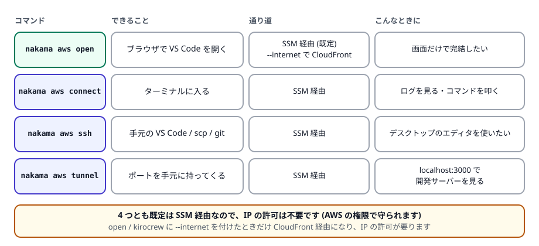

第 5 章 開発環境を使う
作った環境には 4 つの入り方があります。全部覚える必要はありません。まずは open と connect の 2 つを知っておけば十分です。
1. 4 つの方法の使い分け

open (と kirocrew) に --internet を付けたときだけ、インターネット (CloudFront) 経由になり、IP の許可が要ります。2. ブラウザで開く (open)
PowerShell で実行
nakama aws open dev01ブラウザが開き、パスワードの入力も自動で通過して、VS Code の画面が表示されます。あとは普段の VS Code と同じように使えます。
ブラウザのアドレスは http://code-server.dev01.nakama.localhost:18888 です。nakama が手元のパソコンに入口を用意し、そこから SSM (AWS の権限で守られた通り道) を通って開発環境の code-server につなぎます。開発環境にはインターネットからの入口が無く、IP の許可も要りません。
アドレスには開発環境の名前が入るので、いくつ開いても番号を選んだり覚えたりする必要はありません。手元の入口 (ポート 18888) は 1 つで、nakama がアドレスの名前を見て行き先を選びます。ログインの状態も、開発環境ごとに分かれて残ります。
入口は nakama の常駐プログラム (tunnel と同じもの、5 節) が持っていて、open の後も動き続けます。ネットワークが切れたとき、Wi-Fi を切り替えたとき、パソコンがスリープから戻ったときも、自動でつなぎ直します。VS Code の画面には再接続中である旨が表示され、つながれば作業の続きに戻れます。
状態は nakama aws tunnel status dev01 で、止めるときは nakama aws tunnel stop dev01 で。5 分使わなかった入口は、次にブラウザがつなぐまで SSM のセッションを張らずに待ちます (状態 idle)。
手元で別のプログラムが 18888 番を使っているとエラーになります。環境変数 NAKAMA_ROUTER_PORT で別の番号を指定してください (アドレスの番号もその番号になります)。
$env:NAKAMA_ROUTER_PORT = "18889"
nakama aws open dev01*.nakama.localhost を開けないとき
このアドレスは、Chrome・Edge・Firefox と、macOS 26 以降の Safari で開けます。それより前の macOS の Safari などで開けないときは、--local-port で番号を指定すると、http://localhost:<番号> で開きます。
nakama aws open --local-port 18080 dev01nakama は AWS からパスワードを取得し、あなたのパソコンの中だけで動く 1 回限りのページ (ランダムな文字列付きの URL) を作って、そこからログインフォームを自動送信します。パスワードはディスクに書き込まれません。
状況に応じて次のオプションが使えます。
| オプション | 用途 |
|---|---|
--local-port <番号> | *.nakama.localhost のアドレスを使わず、http://localhost:<番号> で開きます |
--internet | SSM ではなく、インターネット (CloudFront) 経由で開きます。CloudFront を足した環境だけで使え (第 4 章)、IP の許可が要ります (第 3 章) |
--print-url | ブラウザを開かず URL だけ表示します |
--no-auth | 自動ログインをせず、URL を開くだけにします (パスワードは手で入力) |
--browser <コマンド> | 使うブラウザを指定します (URL が最後の引数として渡されます)。ブラウザを見つけられないと、SSM 経由では URL を表示せずにエラーになるので、そのときに使います |
--timeout <時間> | 自動ログイン用ページの待ち時間 (既定 30 秒)。--timeout 60s のように単位を付けて書きます |
SSM 経由は CloudFront 経由より遅く、最初の読み込みには数秒から十数秒かかることがあります。2 回目からはブラウザのキャッシュが効きます。
--internet がエラーや 403 になるとき
「has no CloudFront」というエラーなら、その環境は CloudFront の入口を持っていません。必要なら nakama aws cloudfront add dev01 で足します (第 4 章)。
403 になるなら、あなたの接続元 IP が許可リストに入っていません。nakama aws acl add を実行してください (第 3 章)。nakama は開く前に IP をチェックし、未登録なら警告を表示します。
--bare の環境には code-server も CloudFront もないため、open は使えず、代わりの方法を案内するエラーになります。
code-server の拡張機能は、Open VSX というストアから入ります。Microsoft の Marketplace は、利用規約で Microsoft 製品専用とされているため使えません。目的の拡張機能が見つからない場合は、Open VSX で名前を検索してみてください。デスクトップ版の VS Code から使う場合 (4 節) は、Marketplace の拡張機能も使えます。
3. ターミナルに入る (connect)
ログを見たい、コマンドを叩きたい、というときは connect です。SSH の鍵や設定は不要で、AWS の権限だけで入れます。
PowerShell で実行
nakama aws connect dev01 # 対話シェルに入る (exit で抜ける)
nakama aws connect dev01 ls -la # コマンドを 1 つだけ実行する
nakama aws connect --tty dev01 top # 画面が動くコマンドを実行する (フラグは名前より前)connect dev01 <コマンド> は ssh と同じように、環境側のコマンドの終了コードで終わります。エラー出力は手元のエラー出力 (stderr) に出ます。たとえば PowerShell では nakama aws connect dev01 test -d /srv/app; $LASTEXITCODE で、ディレクトリがあれば 0、無ければ 1 が表示されます。nakama 自身がうまく動かなかったときは 255 です。
結果はコマンドが終わってからまとめて表示されます。途中経過を見たいときは --tty を付けてください (その代わり、終了コードは受け取れません)。
コマンドに手元のデータを渡すこと (| nakama aws connect ...) はできません。ファイルを送るときは、次の節の ssh / scp を使います。一方、対話シェルにはファイルの内容を流し込めます (nakama aws connect dev01 < steps.sh。PowerShell では Get-Content steps.sh | nakama aws connect dev01)。ただし Windows では、この流し込みはコンソールでしか使えません。
code-server と同じユーザーなので、ファイルの権限で悩まずに済みます。管理者権限が必要なときは sudo を使えます (パスワードは不要です)。
ネットワークが不安定でセッションが切れた場合、対話シェルでは自動で再接続します (既定で最大 5 回)。再接続後は新しいシェルになるため、カレントディレクトリや実行中のプロセスは失われます。長時間の作業は tmux や screen の中で行うと安全です。
コマンドを 1 つ実行するモードでは、同じコマンドを二重に実行してしまわないよう、既定で再接続しません。--retry <回数> で明示できます (--retry 0 で無効)。
tmux や screen は、接続が切れても環境側で作業を続けられるようにするツールです (sudo apt install tmux で入れて、tmux と打つと始まります)。
4. 手元の VS Code から使う (ssh)
ブラウザ版ではなくデスクトップ版の VS Code を使いたい、scp でファイルを送りたい、git を ssh 経由で使いたい。そんなときは ssh setup を一度実行します。
ssh setup は「あなたの ssh 公開鍵」を環境に登録します。鍵をまだ作っていない場合 (C:\Users\<あなた>\.ssh\id_ed25519.pub が無い場合) は、先にこれを実行します。
PowerShell で実行
ssh-keygen -t ed255193 回聞かれます。保存先はそのまま Enter、パスフレーズは 2 回聞かれるので、空のまま Enter でも構いません (設定すると接続のたびに入力を求められます)。これで .ssh フォルダーと鍵の 2 ファイルができます。末尾が .pub のファイルが公開鍵で、これだけが環境に渡ります。もう一方 (秘密鍵) は誰にも渡さないでください。
PowerShell で実行
nakama aws ssh setup dev01key: C:\Users\you\.ssh\id_ed25519.pub (authorized for ubuntu)
snippet: C:\Users\you\.config\nakama\ssh\dev01.conf
# Generated by `nakama aws ssh setup dev01`. Include this file from
# ~/.ssh/config; nakama never edits ~/.ssh/config itself.
Host nakama-dev01
User ubuntu
HostName nakama-dev01
ProxyCommand C:\Users\you\bin\nakama.exe aws ssh proxy dev01 --port 22
# The proxy carries ssh over SSM Session Manager: no inbound port,
# no public IP, and host keys are per-instance as usual.
StrictHostKeyChecking accept-new
Add this line to ~/.ssh/config (once per instance file):
Include C:\Users\you\.config\nakama\ssh\dev01.conf
Then: ssh nakama-dev01 | VS Code: Remote-SSH -> nakama-dev01ここで表示された Include の行を、自分の ~/.ssh/config (Windows では C:\Users\<あなた>\.ssh\config) に1 行追加します。
-
configファイルがまだ無ければ作ります (.sshフォルダーは鍵を作ったときにできています)。PowerShell で実行
New-Item -ItemType File -Force "$env:USERPROFILE\.ssh\config" -
表示された
Include行をconfigに追加します。Includeは他のHost設定より前に書く必要があります (ssh は最初に見つかった設定を使うため)。状況に応じて次のどちらかを選んでください。config が空 (今作った) 場合: 次のコマンドで追記すれば、それが先頭になります。
PowerShell で実行
Add-Content "$env:USERPROFILE\.ssh\config" "Include $env:USERPROFILE\.config\nakama\ssh\dev01.conf"すでに他の設定が書かれている場合: メモ帳で開き、1 行目に
Include行を貼り付けて保存してください。notepad "$env:USERPROFILE\.ssh\config" -
接続します。
ssh nakama-dev01初回は「本当に接続してよいか」を聞かれることがあります (
yesと入力して Enter)。 -
デスクトップ版 VS Code の場合は、拡張機能「Remote - SSH」を入れてから、コマンドパレット (Ctrl+Shift+P) で Remote-SSH: Connect to Host を選び、一覧に出てくる
nakama-dev01を選びます。初回は接続先の OS を聞かれるので Linux を選び、続けて接続を続けるかの確認 (fingerprint) が出たら Continue を選びます。VS Code が環境側に必要なものを入れるため、最初の接続だけ 1〜2 分かかります。
- 登録されるのは公開鍵だけです。秘密鍵は手元から出ません
- 鍵を明示するときは
--identity C:\Users\you\.ssh\id_ed25519.pub、鍵の登録をせず設定ファイルだけ作るときは--no-keyを使います - nakama はあなたの
~/.ssh/configを書き換えません。生成するのは~/.config/nakama/ssh/<名前>.confだけで、取り込むかどうかはあなたが決めます ProxyCommandには nakama 実行ファイルの絶対パスが埋め込まれます (パスに空白が含まれる場合だけ、自動で引用符が付きます)- 同じ操作を何度実行しても、公開鍵が二重に登録されることはありません
connect や tunnel のような nakama の自動再接続は、ssh 経由では働きません。切断が気になる場合は、~/.ssh/config に ServerAliveInterval 30 のような設定を自分で足してください。
5. ポートを手元に持ってくる (tunnel)
開発環境で動かした Web サーバー (例: ポート 3000) を、手元のブラウザで http://localhost:3000 として見たい場合に使います。
PowerShell で実行
nakama aws tunnel dev01 -L 3000:3000tunnel started for dev01 (pid 12345):
FORWARD STATE SINCE DETAIL
3000:3000 active 0spid は裏で動いている常駐プログラムの番号です (覚える必要はありません)。
このコマンドはすぐに終了します。転送は裏で常駐するプログラムが維持するので、ターミナルを閉じても続きます。セッションが切れても、手元のポートは開いたまま自動でつなぎ直します (回数の上限はありません)。open と kirocrew の入口も、同じ常駐プログラムに加わります。
| コマンド | 内容 |
|---|---|
nakama aws tunnel dev01 -L 3000:3000 | 転送を開始 (start は省略できます) |
nakama aws tunnel start dev01 -L 8080:8080 -L 5432:db.internal:5432 | 複数同時に転送。3 つ組の形式は「手元のポート:相手ホスト:相手のポート」です |
nakama aws tunnel status dev01 | その環境の転送状態を表示 (open / kirocrew の入口は (code-server) / (kirocrew) と表示されます) |
nakama aws tunnel status | このパソコンに記録されたすべての転送を一覧 (AWS の資格情報が不要) |
nakama aws tunnel suggest dev01 | 環境側で待ち受けているポートを調べて、-L の書き方を提案します (転送はしません) |
nakama aws tunnel restart dev01 | 設定を変えずに常駐プログラムを入れ替える (nakama を新しい版にした後、dead になった転送を戻すときなどに) |
nakama aws tunnel stop dev01 | 転送を止めて常駐も終了 (open / kirocrew の入口も止まります) |
status の STATE 列の意味です。
| 表示 | 意味 | 対処 |
|---|---|---|
connecting | SSM のセッションを張っている | しばらく待つ |
active | 正常に転送中 | — |
reconnecting | 切断され、再接続を試みている (DETAIL に理由と次の試行までの時間)。資格情報の期限切れのときは 1 分ごとに試します | しばらく待つ。資格情報の期限切れなら nakama aws login (つなぎ直しは自動) |
idle | 5 分使われていないので、セッションを張らずに待っている。手元のポートは開いたまま | そのまま使えます (次の接続でセッションを張ります) |
dead | 続けられずに止まった (開発環境が削除された、など)。DETAIL に理由 | 理由を確かめて、tunnel restart <名前> か tunnel stop → start |
stale | 常駐プログラムが見つからない (記録だけ残っていた)。名前を省略した全件一覧のときに出ます | 表示時に古い記録が片付けられます。必要なら再度 tunnel start (名前を指定した status では、記録を片付けて「転送は動いていない」というエラーになります) |
nakama aws tunnel suggest dev01環境側で待ち受け中のポートを調べて、そのままコピーできる -L 付きのコマンドを提案します。22 番 (ssh) は一覧には出ますが「ssh を使うほうが適切」という注記が付き、まとめて実行するコマンドには含まれません。
ログは OS の標準的な場所に出ます (Windows はイベントログ、macOS / Linux は syslog)。転送の状態は ~/.config/nakama/tunnels/<名前>.json に保存され、tunnel stop で削除されます。アドレスで行き先を選ぶ入口 (ルーター) は別のプログラムで、状態は ~/.config/nakama/router.json にあり、開発環境の転送が 1 つも無くなると 1 分後に自分で終わります。
6. Kiro Crew の画面を開く (kirocrew)
環境に入っている Kiro Crew には Web の画面があります。この画面は環境の中の localhost:5476 でだけ待ち受けています。kirocrew は、open と同じく SSM 経由で、この画面を手元の http://kirocrew.dev01.nakama.localhost:18888 に持ってきて開きます。
PowerShell で実行
nakama aws kirocrew dev01ブラウザが開き、Kiro Crew へのサインインが自動で済んで、画面が表示されます。準備の操作 (enable) は要りません。--bare で作った環境でも使えます。手元のパソコンでも Kiro Crew を動かしていて 5476 番を使っていても、そのまま開けます。
通り道は SSM (AWS の権限で守られた通り道) だけで、Kiro Crew はインターネットに出ていません。Kiro Crew に入るためのトークンは、環境の中で暗号化してから nakama が受け取り、手元の 1 回限りのページからブラウザに渡します。AWS の実行履歴にも画面にも、そのままの形では残りません。
この経路では、Kiro Crew は手元からの操作として扱うので、ブラウザから設定を変えたり秘密情報を表示したりもできます。
開発環境のターミナルで kirocrew token が出す http://localhost:5476?token=… は、手元の 5476 番に向いています。nakama aws kirocrew --local-port 5476 dev01 で開いているときは、そのまま届きます。それ以外のときは、リンクをクリックせずに文字をコピーし、http://localhost:5476 の部分を http://kirocrew.dev01.nakama.localhost:18888 に書き換えて開いてください。
CloudFront 経由で開く (--internet)
SSM が使えないネットワークなどで、インターネット (CloudFront) 経由で開きたいときは、Kiro Crew を外に直接出さず、必ず code-server を通して開く仕組みを用意します。code-server の CloudFront の入口 (第 4 章) と IP の許可 (第 3 章) が先に要ります。
PowerShell で実行 (最初の 1 回だけ)
nakama aws cloudfront add dev01 # code-server の入口 (まだ無ければ)
nakama aws kirocrew enable dev01Kiro Crew 用の入口 (CloudFront) と、環境の中の小さなプロキシを用意します。CloudFront の反映待ちで数分から十数分かかります。途中で code-server が 1 回再起動するので、開いているブラウザの VS Code はつなぎ直されます。ポート転送 (Ports パネルやターミナルのリンク) は今までどおり使えます。
PowerShell で実行 (使うたび)
nakama aws kirocrew --internet dev01ブラウザが開き、code-server へのログインと Kiro Crew への受け渡しが自動で済んで、Kiro Crew の画面が表示されます。パスワードを入力する必要はありません。
--internet の経路の確認
入口から Kiro Crew にたどり着くまでに、IP の許可リスト → code-server のパスワード → プロキシによる送信元の確認 → Kiro Crew のトークンの 4 段の確認を通ります。Kiro Crew の仕様で、この経路の画面では設定の書き換えと秘密情報の表示ができません (SSM 経由ならできます)。
enable の後はターミナルのリンクも CloudFront へ
enable の後は、code-server を CloudFront 経由で開いているとき、ターミナルで kirocrew token が出す http://localhost:5476?token=… のリンクをクリックすると、Kiro Crew 用の入口へ自動で転送されます。初めて開くときは、Kiro Crew 用の入口で code-server のパスワードを 1 回だけ聞かれます (別の入口なので、ログイン状態を共有できないためです)。
| コマンド | 内容 |
|---|---|
nakama aws kirocrew dev01 | SSM 経由でブラウザで開く (--local-port、--print-url、--no-auth、--browser、--timeout の意味は open と同じ。--no-auth はトークンを渡さずに開く) |
nakama aws kirocrew enable dev01 | CloudFront 経由の仕組みを用意する (cloudfront add が先に要る。何度実行しても同じ結果。途中で失敗しても、もう一度実行すれば続きから進む) |
nakama aws kirocrew --internet dev01 | CloudFront 経由でブラウザで開く (enable が先に要る) |
nakama aws kirocrew disable dev01 | CloudFront 経由の仕組みを取り外す (nakama aws cloudfront delete と nakama aws delete でも一緒に消える) |
--bare で作った環境には code-server が無いので、--internet の方法は使えません。SSM 経由 (--internet なし) で開いてください。